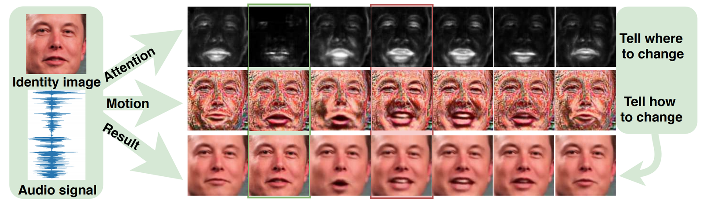
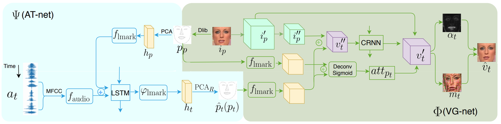
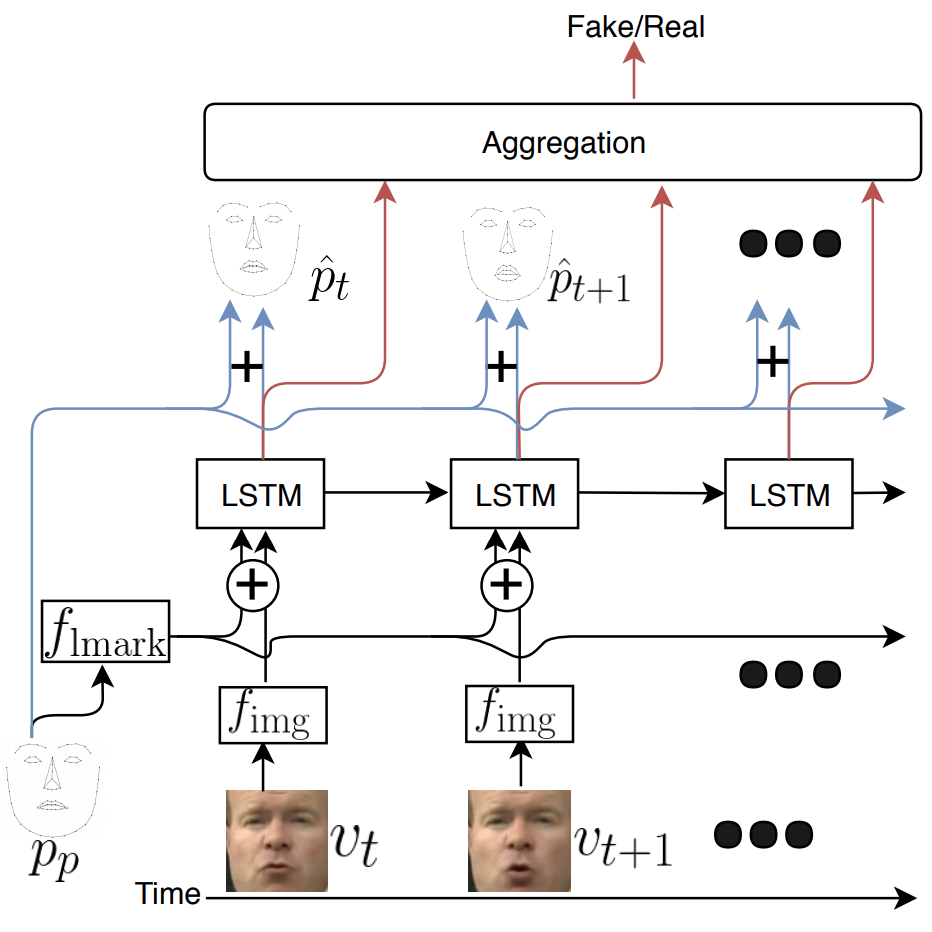
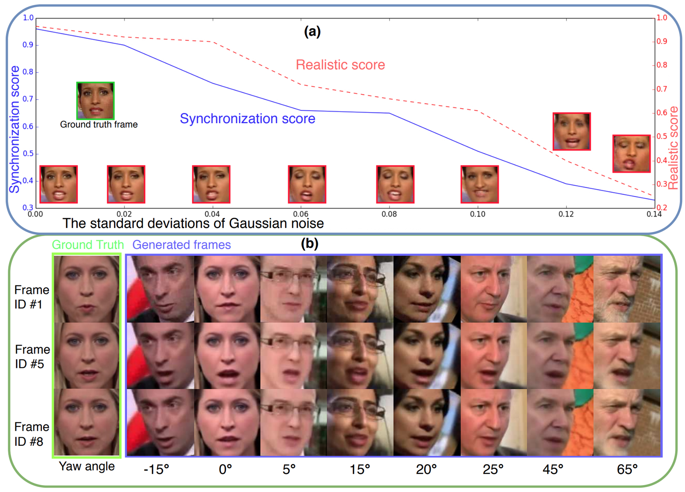

Cross-Modal Talking Face Generation
What is the problem?
We consider such a task: given a target face image and an arbitrary speech audio recording, generating a photo-realistic talking face of the target subject saying that speech with natural lip synchronization while maintaining a smooth transition of facial images over time. The model should have a robust generalization capability to different types of faces (e.g., cartoon faces, animal faces) and to noisy speech conditions. Solving this task is crucial to enabling many applications, e.g., lip-reading from over-the-phone audio for hearing-impaired people, generating virtual characters with synchronized facial movements to speech audio for movies and games.

Figure: The model takes an arbitrary audio speech and one face image, and synthesizes a talking face saying the speech. The synthesized frames (last row) consist of synthesized attention (first row) and motion (second row), which demonstrate where and how the dynamics are synthesizing.
What is our approach?
We devise a cascade GAN approach to generate talking face video, which is robust to different face shapes, view angles, facial characteristics, and noisy audio conditions. Instead of learning a direct mapping from audio to video frames, we propose first to transfer audio to high-level structure, i.e., the facial landmarks, and then to generate video frames conditioned on the landmarks. Compared to a direct audio-to-image approach, our cascade approach avoids fitting spurious correlations between audiovisual signals that are irrelevant to the speech content.

Figure: Overview of our network architecture. The blue part illustrates the AT-net, which transfers audio signal to low dimensional landmarks representation and the green part illustrates the VG-net, which generates video frames conditioned on the landmark. During training, the input to VG-net are ground truth landmarks. During inference, the input to VG-net are fake landmarks generated by AT-net. The AT-net and VG-net are trained separately to avoid error accumulation.
We, humans, are sensitive to temporal discontinuities and subtle artifacts in video. To avoid those pixel jittering problems and to enforce the network to focus on audiovisual-correlated regions, we propose a novel dynamically adjustable pixel-wise loss with an attention mechanism.
Furthermore, to generate a sharper image with well-synchronized facial movements, we propose a novel regression-based discriminator structure, which considers sequence-level information along with frame-level information.

Figure: The regression-based discriminator.

Figure: The trend of image quality w.r.t. (a) the landmarks (top) and (b) the poses (bottom).
Our Results:

Figure: The outputs of ATVGnet. The inputs are one real-world audio sequence and different example identity images range from real-world people to cartoon characters. The first row is ground truth images paired with the given audio sequence. We mark the different sources of the identity image on the left side. From this figure, we can find that the lip movements of our synthesized frames (e.g., the green box in the last row) are well-synchronized with the ground truth (red box in first row). Meanwhile, the attention (middle row of the green box) accurately indicates where need to move and the motion (last row of the green box) indicates what the dynamics look like (e.g. white pixels for teeth and red pixels for lips).
Demo:
Highlights:
- Our poster was featured in IEEE news for provoking deep discussions at the 2019 IEEE/CVF Conference on Computer Vision and Pattern Recognition (CVPR). [ link ]
Code/Download:
- Our code and documentation are downloadable here.
Publications:
- L. Chen, R. Maddox, Z. Duan, and C. Xu. Hierarchical cross-modal talking face generation with dynamic pixel-wise loss. In Proc. of IEEE Conference on Computer Vision and Pattern Recognition, 2019. [pdf]
- L. Chen, H. Zheng, R. Maddox, Z. Duan and C. Xu. Sound to visual: Hierarchical cross-modal talking face video generation. In Proc. of IEEE Conference on Computer Vision and Pattern Recognition Workshops, 2019. [pdf]
- L. Chen, Z. Li, R. Maddox, Z. Duan and C. Xu. Lip movements generation at a glance. In Proc. of European Conference on Computer Vision, 2018. [pdf]
Disclaimer: Any opinions, findings, and conclusions or recommendations expressed in this material are those of the author(s) and do not necessarily reflect the views of the funding agents.